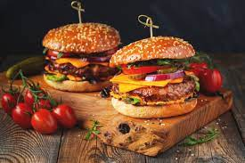

Macarrão
Macarrão é um tipo de massa alimentícia com o formato de tubos curtos, em que se incluem os penne e os cotovelos. No entanto, em algumas regiões do Brasil, o termo "macarrão" é usado para se referir a qualquer tipo de massa alimentícia, desde o espaguete às letras e outras formas usadas em vários cozidos e sopas.
Compre
Pizza
Pizza ou piza é uma preparação culinária que consiste em um disco de massa fermentada de farinha de trigo, coberto com molho de tomate e os ingredientes variados que normalmente incluem algum tipo de queijo, carnes preparadas ou defumadas e ervas, normalmente orégano ou manjericão, tudo assado em forno.
Compre

Hamburguer
Um hambúrguer, ou simplesmente hambúrguer, é um alimento composto por recheios - geralmente um hambúrguer de carne moída, geralmente carne bovina - colocado dentro de um pão fatiado ou pãozinh.
Compre